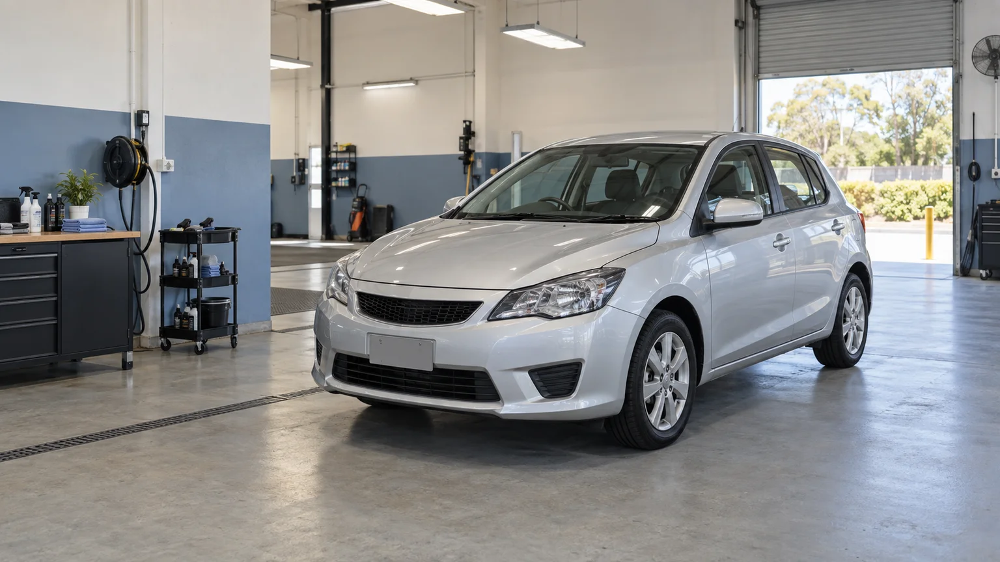

The workshop / Perth since 2018
Built around the cars
people actually use.
Baylight began with a straightforward idea: an everyday car deserves careful work and a plain explanation of what that work involves.

A small, hands-on team
Close enough to
know the whole job.
Our eight-person team shares the practical work of reception, inspection, detailing and handover. A clear note connects the first conversation with the person working on the vehicle.
We work with private owners across the Perth metropolitan area: compact hatchbacks, family crossovers, larger SUVs and dual-cab utes. Package bands describe the workload; the vehicle itself confirms the fit.
Our focus is accessible cabin cleaning, everyday exterior care and considered surface enhancement. We leave mechanical repairs, insurance work, body repairs and fleet washing to other businesses.
See exactly what we offer ↗Handover hours
Monday–Friday
08:00–17:00 AWST
Visits are appointment-led, with a reception handover before work. A morning or afternoon preference is a starting point for discussion, not a reserved slot.
- On-site workshop service only; no mobile visits.
- No courtesy car or after-hours key drop.
- Allow your own onward travel and collection plan.
Start with your vehicle
Bring a useful scope
to the conversation.
The visit worksheet makes a local note of your package, vehicle band and preferences. It can show where an inspection is needed without requesting a registration plate, contact details or photographs.
Fictional workshop: no physical address or booking contact is operated by this concept. Example email: hello@baylight.example.